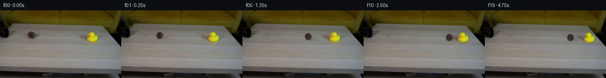

![首帧]()

Round 00
2026-11-04T19:43:42.652365+00:00像素候选变化代码 +212/−0inspection 更新
pixels ef1bac37b5d14381 · code 377487719cec121a
查看本轮 generate.py 真实 diff
--- previous/generate.py
+++ current/generate.py
@@ -0,0 +1,212 @@
+"""Deterministic image continuation using local NumPy/SciPy/Pillow pixels."""
+from pathlib import Path
+import json
+import numpy as np
+from PIL import Image, ImageDraw
+from scipy.ndimage import gaussian_filter, map_coordinates, distance_transform_edt, binary_erosion
+from artifact_io import save
+
+ROOT = Path(__file__).resolve().parent
+SRC = np.asarray(Image.open(ROOT/'first_frame.png').convert('RGB'), dtype=np.float64)
+H, W = SRC.shape[:2]
+YY, XX = np.mgrid[:H, :W]
+
+# Rebuild wood along its horizontal grain, using samples on both sides of each
+# erased object. Add a small amount of real grain copied from the same row.
+def restore_wood(image, box, sample_left, sample_right):
+ x0,y0,x1,y1 = box
+ result = image.copy()
+ region = np.zeros((H,W), float)
+ region[y0:y1,x0:x1] = 1
+ region = gaussian_filter(region, 1.2)
+ region = np.clip(region * 1.2, 0, 1)
+ for y in range(max(0,y0-4),min(H,y1+4)):
+ left = np.median(image[y,sample_left[0]:sample_left[1]], axis=0)
+ right = np.median(image[y,sample_right[0]:sample_right[1]], axis=0)
+ lx = np.mean(sample_left); rx = np.mean(sample_right)
+ for x in range(max(0,x0-4), min(W,x1+4)):
+ u = (x-lx)/(rx-lx)
+ estimate = left*(1-u)+right*u
+ tx = sample_left[0] + (x-x0) % (sample_left[1]-sample_left[0])
+ local = image[y,tx]-gaussian_filter(image[y], 2.0, axes=0)[tx]
+ estimate += .45*local
+ a = region[y,x]
+ result[y,x] = image[y,x]*(1-a)+estimate*a
+ return result
+
+BALL_C = (65.8,52.15)
+RX, RY = 6.85, 7.55
+CLEAN_BALL = restore_wood(SRC, (55,41,88,64), (38,53), (91,109))
+CLEAN_ALL = restore_wood(CLEAN_BALL, (166,44,211,72), (146,165), (214,229))
+Image.fromarray(np.uint8(np.clip(CLEAN_ALL,0,255))).save(ROOT/'.tmp/clean_background.png')
+
+# Duck: draw a subpixel outline, refine the edge alpha with local colour
+# matting, and retain the photographed eye, bill, wing, and body shading.
+outline = [(193,45.8),(195.8,46.3),(197.8,48.1),(199.3,50.6),
+ (199.3,53.1),(202.9,53.0),(204.7,53.7),(205.5,55.6),
+ (205.5,58.7),(204.7,61.6),(203.0,63.9),(200.3,65.7),
+ (197,66.8),(192.4,66.8),(188.2,65.9),(185.1,64.3),
+ (183.7,61.8),(183.8,59.4),(184.8,57.0),(185.8,55.7),
+ (184.1,55.7),(182.7,54.4),(183.7,53.1),(185.3,52.8),
+ (186.6,53.1),(186.7,50.5),(187.8,48.7),(189.7,46.9),
+ (191.5,46.0)]
+S = 8
+m = Image.new('L',(W*S,H*S))
+ImageDraw.Draw(m).polygon([(round(x*S),round(y*S)) for x,y in outline],fill=255)
+geom = np.asarray(m.resize((W,H),Image.Resampling.LANCZOS),float)/255
+core = binary_erosion(geom>.65,iterations=1)
+_, idx = distance_transform_edt(~core, return_indices=True)
+nearest = SRC[idx[0],idx[1]]
+background = CLEAN_ALL
+vec = nearest-background
+projected = np.sum((SRC-background)*vec,axis=2)/(np.sum(vec*vec,axis=2)+1e-9)
+near = gaussian_filter((geom>.35).astype(float),.55)
+DUCK_A = np.clip(projected,0,1)*np.clip(near*2,0,1)
+DUCK_A[core] = 1
+DUCK_A[geom<.015] = 0
+DUCK_A = np.clip(DUCK_A,0,1)
+DUCK_PRE = SRC-background*(1-DUCK_A[...,None])
+DUCK_PRE = np.clip(DUCK_PRE,0,255*DUCK_A[...,None])
+DUCK_PIVOT = np.array([194.5,66.2])
+
+# Transfer the original visible duck shadow. Below the silhouette, where the
+# photograph cannot reveal the tabletop, continue a soft contact-shadow model.
+shadow_diff = np.clip(background-SRC,0,75)
+shadow_area = (XX>165)&(XX<212)&(YY>48)&(YY<72)&(DUCK_A<.035)
+strong = np.clip((shadow_diff[...,2]-7)/9,0,1)
+DUCK_SHADOW = shadow_diff*shadow_area[...,None]*strong[...,None]
+q = ((XX-190.0)/10.0)**2+((YY-64.0-.35*(XX-190))/2.4)**2
+contact = np.exp(-q/2)[...,None]*np.array([23,30,39])
+DUCK_SHADOW = np.maximum(DUCK_SHADOW,contact*gaussian_filter(DUCK_A,1.8)[...,None])
+DUCK_SHADOW = gaussian_filter(DUCK_SHADOW,(.45,.45,0))
+
+# Ball texture comes from the visible photographed hemisphere. Fit smooth
+# shading, then roll that albedo about a 3-D vertical axis with a mirrored
+# continuation onto the unobserved hemisphere. Lighting stays in image space.
+xn = (XX-BALL_C[0])/RX
+yn = (YY-BALL_C[1])/RY
… diff truncated; 125 more lines …